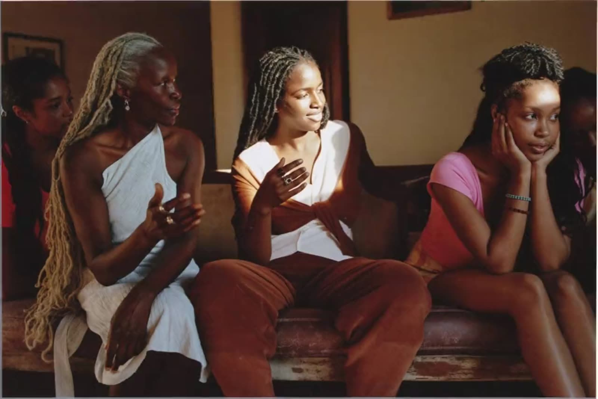
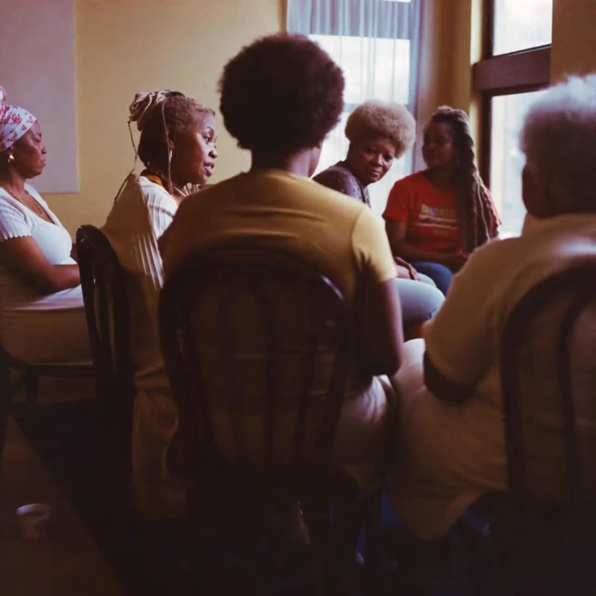

SHUMI · private preview
Two directions, built to be walked through.
Both are the same brief, the same brand and the same words. They disagree about what a room full of women should feel like on a screen. Open each on your phone before you decide.

Direction A — Sanctuary
Warm, quiet, editorial. A full-screen film to open, serif headlines, and a lot of air. It behaves like a good magazine.
Open Direction A
Direction B — Circle
Bright, confident, contemporary. Everything arcs instead of squares, the type carries the page, and the film sits in an arch beside it.
Open Direction BImagery in both directions is art direction — generated to show the kind of photography the design needs, at the right crop and tone. It is not photography of SHUMI's community, and it does not ship. Real photography replaces every frame before launch. Names, quotations and figures marked in the pages are placeholders for the client to confirm.